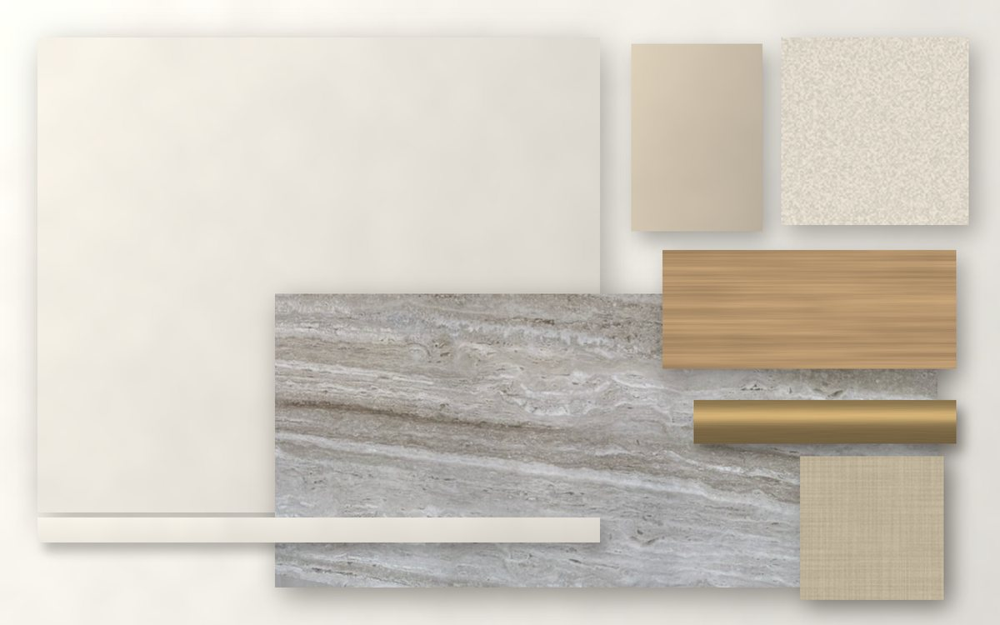

A
Warm Off-White
آمن ومضيء- الجدران
- #ECE7DE · LRV ≈ 80
- السقف
- #F5F2EC
- الأبواب
- نفس لون الجدار بلمعة ساتان، أو بلوط طبيعي
- النعلة
- مخفية (shadow gap) أو بلون الجدار
- Accent
- #CFC3AF (حجري فاتح) لجدار واحد أو نيش
- الخشب
- بلوط أبيض طبيعي rift-cut
- المعدن
- شامبين ساتان
- الأقمشة
- بوكليه عاجي، كتان رملي
الأكثر إضاءة. خطره الوحيد أن يبدو المنزل "غير مكتمل" إذا لم يرافقه خشب ونسيج بدرجة أعمق.